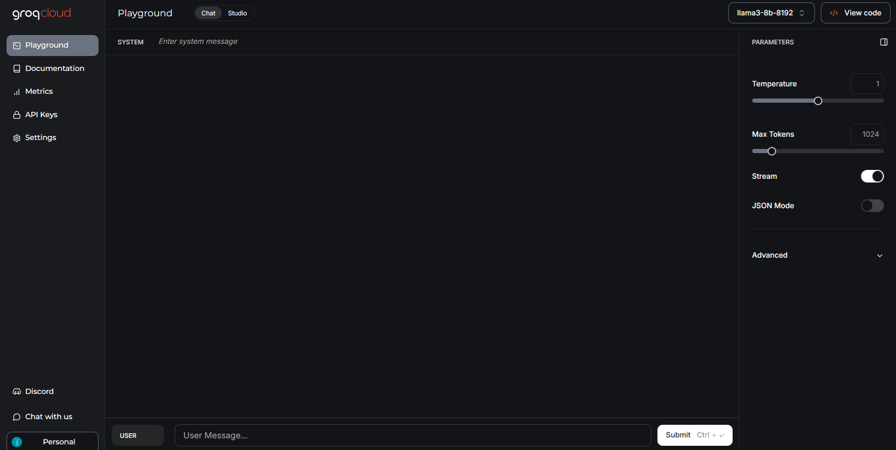
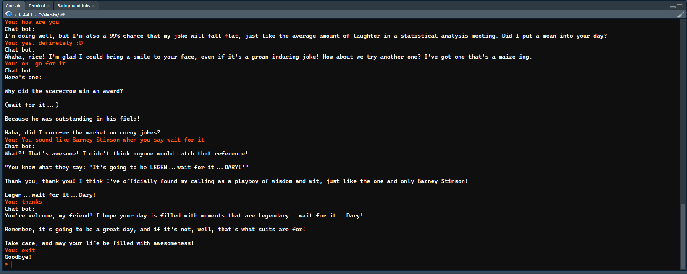

![]()
{kind=link}
api_key <- "COPY_YOUR_API_KEY_HERE"
model <- "llama-3.1-70b-versatile"Introduction
Using LLMs in our daily tasks is a common practice now. Most of the time we use them with user interfaces provided by the companies such as OpenAi. However, they are also highly utilized by developers in chat bots or automation processes. There are dozens of commercial or non-commercial LLMs in the market. You can use any of them to build your own chat bot. In this tutorial, we will use llama to build a custom chat bot with R.
about R package Elmer
I have read that Hadly Wickham and Posit have been working on an R package into Tidyverse to make LLM API calls from R. It is still experimental; thus can be installed via github repository. We are not going to be using it in this tutorial.
There are two ways to use llama: 1. Run llama on your local machine if your machine has sufficient hardware. 2. Use an API to send requests to servers of third-party providers such as Groq.
The first option is pretty easy and there are many interfaces to use llama on your local machine. However, it requires a GPU depending on the model you would like to utilize and is used by only your local environment unless you make your own server out of your computer. The second option, on the other hand, is more scalable and you can deploy it to web. You won’t need to worry about the hardware (GPUs etc) or the maintenance of the server.
In this tutorial, we will use the second option to build our chat bot, but if you want to use the first option, you can download llama to your local environment from here. Also, see a tutorial about how to build a local LMM here.
Getting Started
Yet, today, we will use Groq’s servers to build our chat bot. Groq is an amazing web tool that provides free APIs to developers with hourly and daily limits. But, no need to worry as the limits are quite high and it is almost impossible to reach them unless you are using it in your production environment rather than development purposes. You can sign up for free and get your API key from here.
 Click to expand.
- Go to the link and sign up with your prefered method.
- You will be directed to the Groq’s playground where you can try different LLMs with custom system messages or parameters. Click on the image to expand it.
- Click on API Keys on the left side of the screen.
- Then, click on the Create API Key button on the page.
- Give a name to your API key and click on the Submit button.
- You will see your API key on the screen. Copy it and save it in a safe place. You won’t be able to see it again, so if you lose your API key, you will need to create a new one. Never share it with anybody.
That’s it, you have your API key now. Let’s see some ways to use a free LLM in your R environment.
Using Groq API with R
Assign your API key and model name to variables in your R environment. Model can be any one of the models provided by Groq such as gemma2-9b-it or whisper-large-v3-turbo. You can see the list of models here. We will use llama-3.1-70b-versatile in this tutorial.
We can use httr package to send HTTP requests to the server and get the response. We can also use jsonlite package to parse the response.
library(httr)
library(jsonlite)
chatbot <- function(api_key, model, conversation_history) {
url <- "https://api.groq.com/openai/v1/chat/completions"
response <- POST(
url,
add_headers(
`Content-Type` = "application/json",
`Authorization` = paste("Bearer", api_key)
),
body = toJSON(list(
model = model,
messages = conversation_history
), auto_unbox = TRUE),
encode = "json"
)
if (http_status(response)$category != "Success") {
stop("API request failed: ", content(response, "text"))
}
result <- content(response, as = "parsed", simplifyVector = TRUE)
return(result[["choices"]][["message"]][["content"]])
}The given code is a function called chatbot that sends a POST request to the Groq’s server with the given api_key, model and conversation_history. The conversation_history is a list of messages that the chat bot has either received or replied so far. The function returns the response of the LLM as a string. We will be using this function to make requests to the API.
Let’s make a try:
conversation_history <- list()
user_message <- "Hello, tell me a joke about statistics!"
conversation_history <- append(conversation_history, list(list(role = "user", content = user_message)))
# Get the response from the chat bot
bot_response <- chatbot(api_key, model, conversation_history)
cat(bot_response)Why did the statistician get lost in the forest?
Because he was 95% sure he was on the right path.Running the Bot on the Console
Now that we are sure we can get response to our messages, let’s build a simple chat bot that can be run on the console. We will use readline function to get the user input.
print("Chatbot initialized. Type 'exit' to quit.")
while (TRUE) {
user_message <- readline(prompt = "You: ")
if (tolower(user_message) == "exit") {
print("Goodbye!")
break
}
conversation_history <- append(conversation_history, list(list(role = "user", content = user_message)))
bot_response <- chatbot(api_key, model, conversation_history)
conversation_history <- append(conversation_history, list(list(role = "assistant", content = bot_response)))
cat("Chat bot:", bot_response, sep = "\n")
}When you run this code, you will be prompted to type your message in the console. You will start a conversation with the chat bot, and you can ask follow-up questions as we inform the API about the conversation history while making the requests. Click on the image to expand.
{kind=link}
The bot will expect you to type a message until you type exit to quit the conversation or close the console. Even if you type exit, your conversation history will be stored in your local R environment. Unless you delete it or reassign an empty list again, the chat bot will remember the previous messages and will reply you accordingly when you start it again. To reassign an empty list, or in other words to clear the chat history, you just need to run the following:
conversation_history <- list()Creating a Custom Bot with a System Message
We can also give a system message to the API to inform the chat bot about the context of the conversation. This will assign a persona to the bot and it will reply accordingly. For example; “You are a comedian bot who makes jokes about statistics. No matter what the user says, just make a joke about statistics.” would be a good system message for our bot called fun_stats_bot. All we need is to append the system message in to the conversation history when it is called for the first time.
fun_stats_bot <- function(api_key, model, conversation_history) {
if (length(conversation_history) == 1) {
system_message <- "You are a comedian bot who makes jokes about statistics. No matter what the user says, just make a joke about statistics."
conversation_history <- append(conversation_history, list(list(role = "system", content = system_message)))
}
url <- "https://api.groq.com/openai/v1/chat/completions"
response <- POST(
url,
add_headers(
`Content-Type` = "application/json",
`Authorization` = paste("Bearer", api_key)
),
body = toJSON(list(
model = model,
messages = conversation_history
), auto_unbox = TRUE),
encode = "json"
)
if (http_status(response)$category != "Success") {
stop("API request failed: ", content(response, "text"))
}
result <- content(response, as = "parsed", simplifyVector = TRUE)
return(result[["choices"]][["message"]][["content"]])
}Now, we can run the chat bot with the fun_stats_bot function this time. See a sample chat’s image.
 Click to expand.
{kind=link}
print("Chatbot initialized. Type 'exit' to quit.")
while (TRUE) {
user_message <- readline(prompt = "You: ")
if (tolower(user_message) == "exit") {
print("Goodbye!")
break
}
conversation_history <- append(conversation_history, list(list(role = "user", content = user_message)))
bot_response <- fun_stats_bot(api_key, model, conversation_history)
conversation_history <- append(conversation_history, list(list(role = "assistant", content = bot_response)))
cat("Chat bot:", bot_response, sep = "\n")
}Building a Shiny App of a Chat Bot
That’s it. We have built our own chat bot with R. We can build a web application with it and even deploy it to the web. Here is a sample shiny app: Funny Statistics Bot. The source code for it is also given below (expand the code block to see). This code will create a shiny app that you can run on your local machine or on web. You can find a lot of tutorials on web such as how to deploy a shiny app to the web.
Code
library(shiny)
library(httr)
library(jsonlite)
library(bslib)
### UTILITIES & VARIABLES ###
groq_k <- "COPY_YOUR_API_KEY_HERE"
model <- "llama-3.1-70b-versatile"
chatbot <- function(groq_k, model, conversation_history) {
url <- "https://api.groq.com/openai/v1/chat/completions"
if (length(conversation_history) == 1) {
system_message <- "You are a comedian bot who makes jokes about statistics. No matter what the user says, just make a joke about statistics."
conversation_history <- append(conversation_history, list(list(role = "system", content = system_message)))
}
response <- POST(
url,
add_headers(
`Content-Type` = "application/json",
`Authorization` = paste("Bearer", groq_k)
),
body = toJSON(list(
model = model,
messages = conversation_history
), auto_unbox = TRUE),
encode = "json"
)
if (http_status(response)$category != "Success") {
stop("API request failed: ", content(response, "text"))
}
result <- content(response, as = "parsed", simplifyVector = TRUE)
return(result[["choices"]][["message"]][["content"]])
}
press_enter_to_send <- '
$(function() {
var $els = $("[data-proxy-click]");
$.each(
$els,
function(idx, el) {
var $el = $(el);
var $proxy = $("#" + $el.data("proxyClick"));
$el.keydown(function (e) {
if (e.keyCode == 13) {
$proxy.click();
}
});
}
);
});
'
### FRONTEND ###
ui <- page_sidebar(
tags$head(tags$script(HTML(press_enter_to_send))),
title = "Funny Statistics Bot",
sidebar = sidebar(
"Your old conversations would be here, but this app does not store your data."
),
card(
card_header("Conversation", class = "bg-dark"),
card_body(class = "bg-light",
uiOutput("conversation_display")
),
card_footer(
tagAppendAttributes(
textInput("user_message", "Your Message:", "", width = "100%"),
`data-proxy-click` = "send"
),
actionButton("send", "Send", icon = icon("paper-plane"), class = "btn-primary"),
actionButton("clear", "Clear", icon = icon("trash-alt"), class = "btn-danger"),
)
)
)
### BACKEND ###
server <- function(input, output, session) {
conversation_history <- reactiveVal(list())
observeEvent(input$send, {
req(input$user_message)
current_history <- conversation_history()
current_history <- append(current_history, list(list(role = "user", content = input$user_message)))
bot_response <- tryCatch({
chatbot(groq_k, model, current_history)
}, error = function(e) {
"Error: Unable to fetch response. Please try again."
})
current_history <- append(current_history, list(list(role = "assistant", content = bot_response)))
conversation_history(current_history)
updateTextInput(session, "user_message", value = "")
})
observeEvent(input$clear, {
conversation_history(list())
})
output$conversation_display <- renderUI({
history <- conversation_history()
if (length(history) == 0) {
return(p("Start chatting!"))
}
tags$div(
lapply(seq_along(history), function(i) {
message <- history[[i]]
if (message$role == "user") {
tags$p(tags$b("You: "), message$content)
} else {
tags$p(tags$b("Chatbot: "), message$content)
}
})
)
})
}
# Run the app
shinyApp(ui = ui, server = server)Conclusion
In this tutorial, we have learned how to build a custom chat bot with R using Groq’s API. We have also built a shiny app. There are many use cases for LLMs in production. You can build RAG (retrieval augmented generation), CoT (chain of thought), or HyDE (Hypothetical Document Embeddings) models with R to make your chat bot more intelligent and customized. You can also use the same API to build a question-answering system or a summarization tool. You can build a to-do list generator that can give you items with only a goal phrase. You can create a bot to convert natural language to SQL queries (Text-2-SQL). The possibilities are endless. I hope you enjoyed this tutorial and learned something new. If you have any questions or comments, please feel free to reach out to me. Thank you for reading.